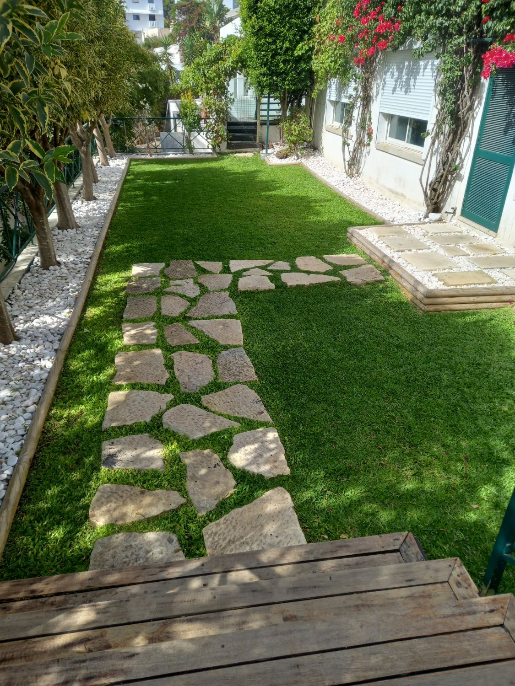
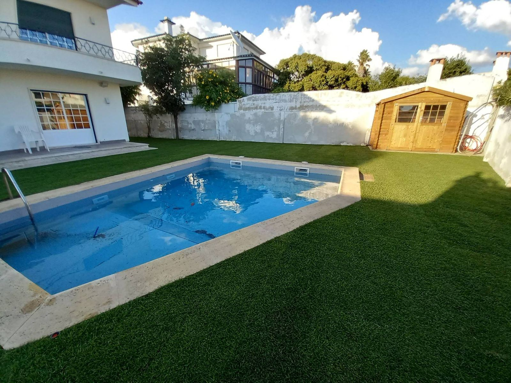
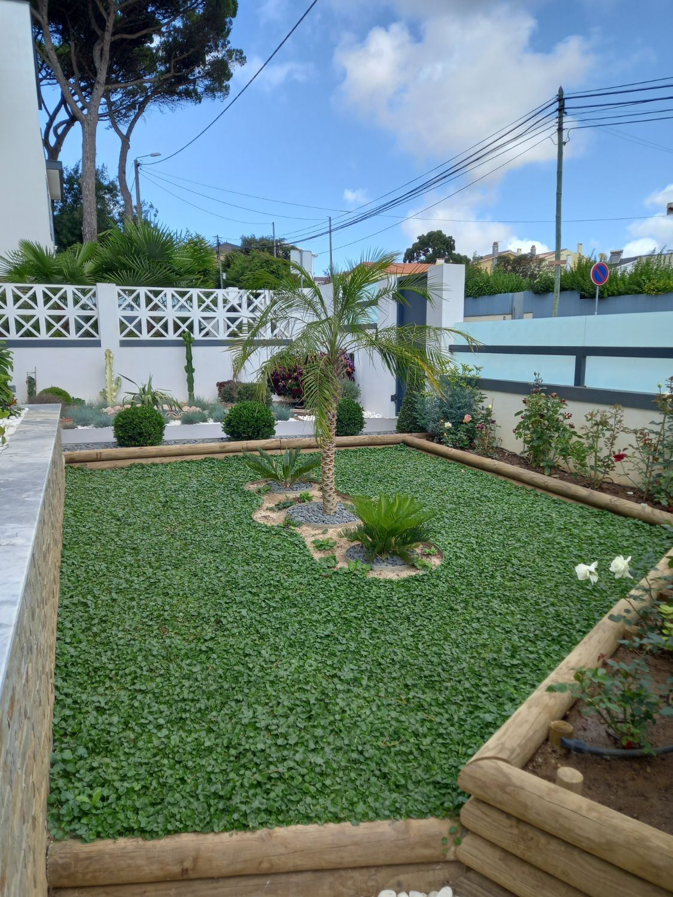
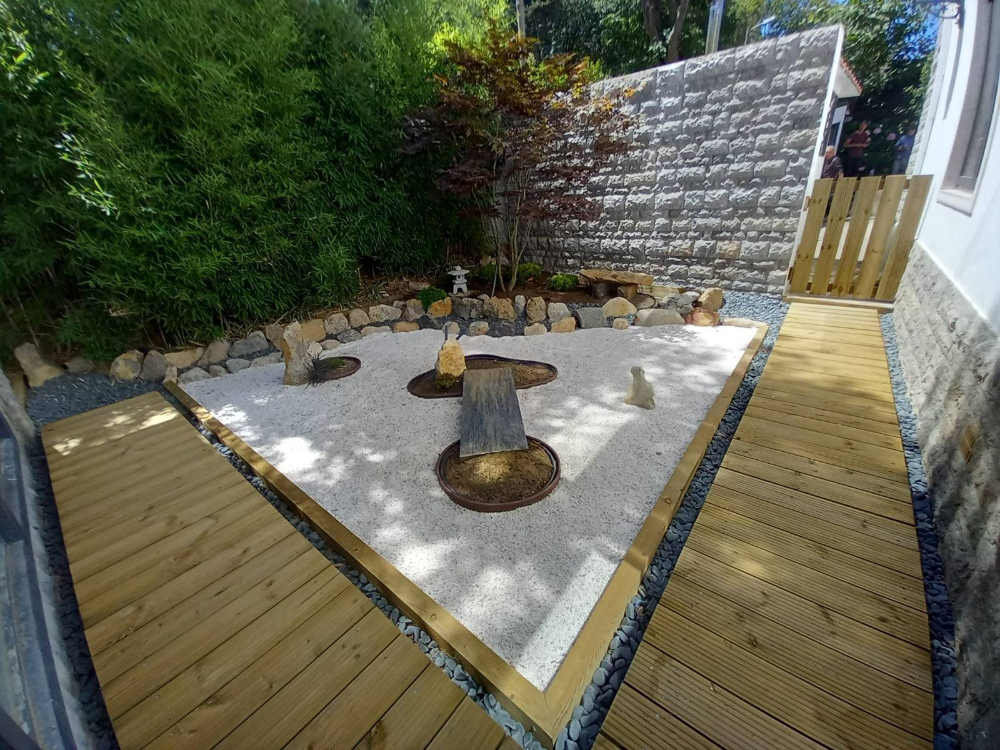
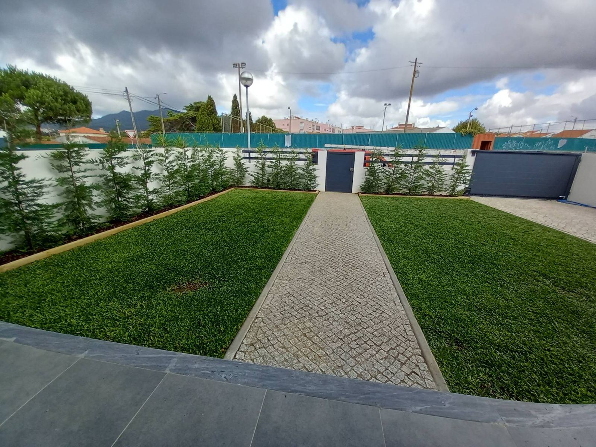
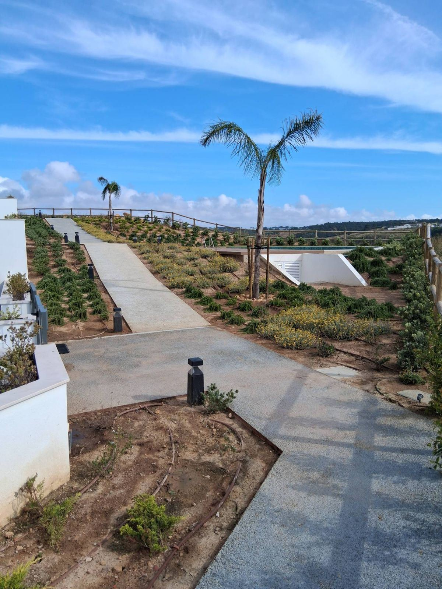
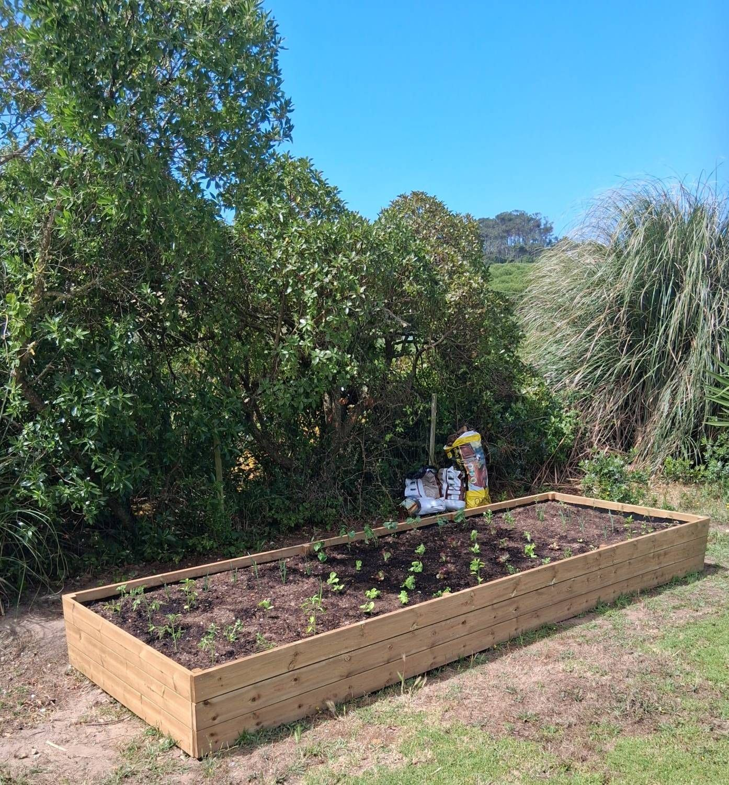
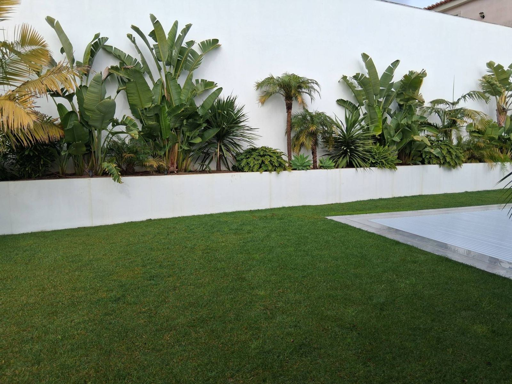
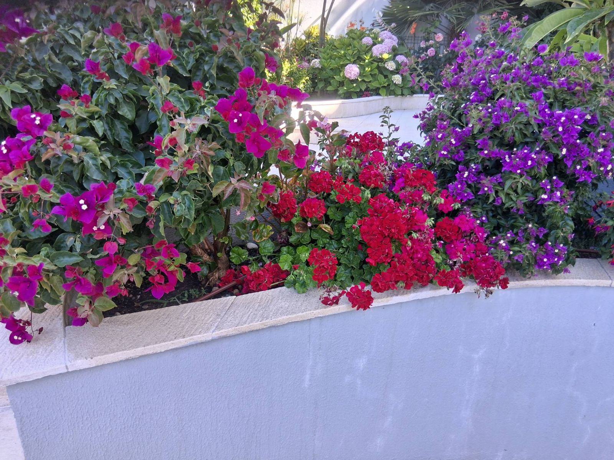
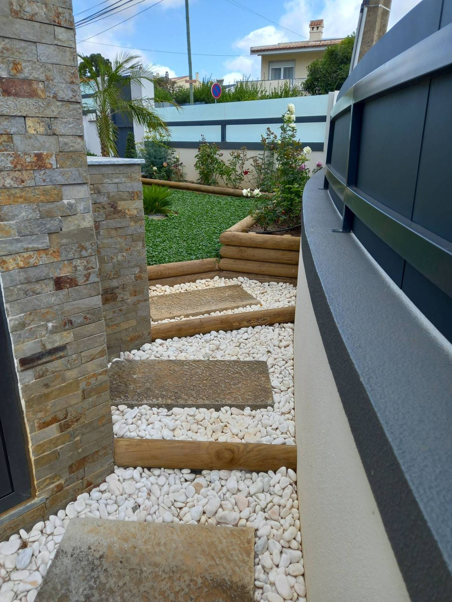

Jardins
Manutenção de jardins
Manutenção regular de relvados, canteiros e plantas: corte, fertilização e todos os cuidados que mantêm o seu jardim em harmonia.
Pedir orçamento →
Jardins · Piscinas · Espaços verdes
Manutenção e criação de jardins, jardins zen e manutenção de piscinas em Sintra, Cascais, Oeiras e Mafra.
O que fazemos
Do relvado à piscina, cuidamos de cada espaço verde com harmonia.

Manutenção regular de relvados, canteiros e plantas: corte, fertilização e todos os cuidados que mantêm o seu jardim em harmonia.
Pedir orçamento →
Limpeza e manutenção regular, para manter a água e os espaços à volta da piscina em boas condições.
Pedir orçamento →
Planeamento, renovação e instalação de espaços verdes adaptados à sua casa e ao seu dia a dia.
Pedir orçamento →
Espaços que convidam à contemplação e trazem bem-estar, harmonia e equilíbrio, inspirados na cultura japonesa e na tradição budista.
Pedir orçamento →
Poda e abate de árvores, arbustos e sebes, com atenção à saúde e à estética das suas plantas.
Pedir orçamento →
Instalação de rega em relvados, canteiros e outros espaços verdes, adequada às necessidades de cada um.
Pedir orçamento →
Limpeza de terrenos de todo o tipo, com remoção dos resíduos.
Pedir orçamento →
Estruturas elevadas para hortas, que facilitam o trabalho e se integram no espaço à volta.
Pedir orçamento →
Espaços verdes em zonas sem terra, como terraços e coberturas, feitos com segurança e garantia de qualidade.
Pedir orçamento →Orçamento grátis
Diga-nos o que precisa e respondemos por email. Sem compromisso.


Sobre nós
Há 10 anos que a Flores & Ser cresce e evolui na jardinagem e na manutenção de piscinas, em Sintra, Cascais, Oeiras e Mafra.
O nosso objetivo é trazer harmonia a cada espaço e criar ambientes que despertem os melhores sentimentos em quem os vive e visita.
Trabalhos
Alguns dos espaços que criámos e mantemos. Clique numa imagem para ampliar.
Como funciona
Preencha o formulário em 2 minutos com o que precisa.
Avaliamos o jardim ou a piscina sem qualquer custo.
Enviamos um orçamento detalhado por email.
A nossa equipa começa no dia combinado.